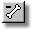
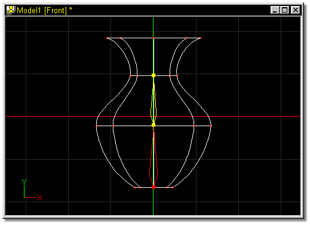
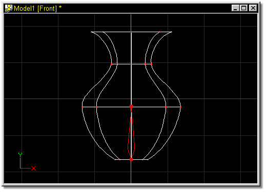

You can delete a bone by clicking on it and then clicking the Delete button. Bones can also be removed by selecting them in the Project Workspace and pressing the Delete key on the keyboard.
The default keyboard shortcut key for Delete is D.

To delete a bone from a model, simply select the bone to be deleted by clicking on it either in the Bones window, or in the Project Workspace (the handles will turn yellow).

Figure 1
Click the Delete button on the Tool Panel or press the D key on the keyboard to remove the bone.

Figure 2
Add Bone
Attach Bone
Detach Bone
Group
Lasso